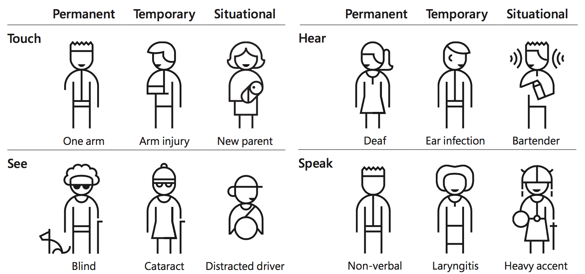
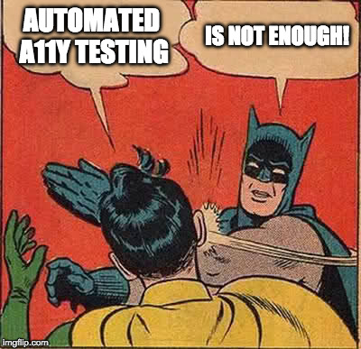

Is your EPUB accessible?
Put it to the test!
#a11y testing
Because it’s the right thing
I would also say that not paying close attention to #a11y ignores the democratic promise of digital publishing. #eprdctn
— Laura Brady (@LauraB7) April 27, 2016
Because you don’t have a choice
Because…
it’s your (frickin’ damn) job!
When UX doesn't consider ALL users, shouldn't it be known as "SOME User Experience" or... SUX? #a11y
— Billy Gregory (@thebillygregory)Jan 6, 2015
Accessibility impacts everyone
 Credits: Microsoft’s Inclusive Design ManualAccessibility is a continuum
Accessibility is a multiverse!
Accessibility is about the whole thing
And the devil is in the details…
… but it’s well worth a shot!
What’s a book?
(drink! 🍻)
 Credits: Accessibility Object Model explainer
Credits: Accessibility Object Model explainer
Assistive technologies
- JAWS
- NVDA
- Voice Over
- ZoomText
Accessibility support
Using a technology in a way that is accessibility supported means that it works with assistive technologies (AT) and the accessibility features of operating systems, browsers, and other user agents.
– WCAG 2.0 specification
Figuring out accessibility support
- blog, articles, tweets
- Web Platform Tests
- … but no “Can I Use” 😞
- often requires manual testing!
Accessibility inspectors (1)
Browser-Based Dev Tools
- chrome://accessibility/ (Chrome)
- F12 Accessibility Tree (Edge)
- Dom Inspector (Firefox extension)
- Accessibility Node Inspection in WebKit Web Inspector (Safari)
Accessibility inspectors (2)
Desktop apps
- Aviewer (Windows)
- Inspect (Windows SDK)
- Accprobe (Windows)
- Accessibility Inspector (Xcode, OS X)
<section>
<h2>Chapter 1: Loomings</h2>
</section>
<section aria-labelledby="ch1">
<h2 id="ch1>Chapter 1: Loomings</h2>
</section>
<div role="doc-chapter region" aria-labelledby="ch1">
<h2 id="ch1">Chapter 1: Loomings</h2>
</div>
Testing: it’s a process
Several levels of testing
Various testing methods
- automated tests
- manual inspection
- user testing
Manual inspection is crucial!
Automation is NOT sufficient!
(Try to) involve users!
Identify platform combinations
- epubjs + Firefox + NVDA on Windows
- iBooks/Safari + VoiceOver on MacOS
- Chrome + TalkBack on Android
Test as early as possible!
Never, ever, understimate the cost of remediation ¯\_(ツ)_/¯
Learn, share, Educate
If you can’t secure leadership backing right away, you can still form a grassroots accessibility movement within the company.
— A DIY Web Accessibility Blueprint
Tooling
Accessibility checkers
- aXe
- Tenon
- HTML Code Sniffer
- A11y.css
- Google Lighthouse
Demo time!
EPUB testing tools
- All of the aforementioned tools!
- Ace, by DAISY
- IBM Digital Content Checker
Ace, by DAISY
Ace’s goals
- manual inspection preparation
- automated checks
based on EPUB Accessibility 1.0
Installation
$ npm install @daisy/ace
$ yarn global add @daisy/ace
Demo time!
Mmm… but I hate the command line!
- Ask for help! Don’t be shy! ace@daisy.org
- baCC: by the German Central Library for the Blind (DZB)
- Ace Desktop App comming later this year… stay tuned!
SMART
Simplified Manual Accessibility Reporting Tool
Demo time!
Links
- https://inclusivepublishing.org/Ace (Ace overview)
- https://daisy.github.io/ace/ (Ace support site)
- http://kb.daisy.org/publishing/ (Knowledge Base)
Should I use several tools?
So, all in all…
Accessibility testing is sometimes complex, and sometimes you will trip up…
Do not aim too high, and always be aware of the technical context (a11y support)
You will need to learn some new methods, some new tools
And these will help avoiding the pitfalls
Remember to build a team, get help
You’ll get there! Be proud to do a quality job, get some wow!
And –most importantly–, you’ll make more readers happy!